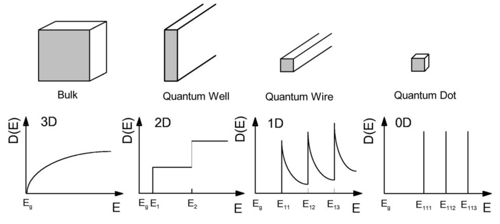

Density of States (DOS) Visualisation
An intuitive and interactive exploration of how dimensionality affects the density of states of an ideal Fermi gas.
Overview
This project investigates how the density of states (DOS) depends on the dimensionality of an ideal Fermi gas. The short demo is going to explore in what sense "free" electrons are really free to move around in a metal. My goal here is to build intuition around phase space arguments rather than treating the DOS as a memorised formula. The description below is the way I tried explaining the concept of DOS to myself when revising for Solid State Physics.
We start with the "Free Electron Model" of a solid from high school chemistry, which introduces the idea that in a bulk material electrons are "free" to move around. The model continues with the concept of electrons in metallic materials being described to be in a "sea of delocalized electrons", free to move around within the bounds of the bulk material. This sea is formed by electrons in energy bands that lie near the Fermi level, which are typically derived from valence electrons but are best understood using band theory rather than atomic shells. In AP, or IB chemistry classes these are the "electrons from the outermost shell". This surprisingly simple model is very appreciated in solid state physics and can be used to describe alkali metals, noble metals, and many more.
Quantum physics tells us that these electrons are not completely free but have a probability distribution of where they would be found inside of the metal, this distribution is known as the square magnitude of the wave function and can be found through solving the Schrödinger equation and normalizing the result. Instead of describing the electrons exact position and velocity, which are concepts that break down at a quantum level, we assign electrons quantum states. A quantum state describes all there is to be known about a system. Mathematically, this quantum state is represented by a wavefunction, which is an exponential function for free particles and the model for this project. The wave The question then becomes "what states do these electrons occupy?", and this is answered through solving the Schrödinger equation with periodic boundary conditions, which leads to plane wave solutions. The density of states function tells us how many distinct quantum states exist per slice of energy. This video gives a very good and concise explanation of what and how the density of states is derived.
Interactive Graph
The graph below shows what happens to the density of states as electrons lose their freedom to move. Each confined direction is modelled as an infinite square well of width L, which splits the energy into discrete sub-bands, while the remaining directions still behave like a free electron gas.
- 3D (bulk): free in every direction, so g(E) ∝ √E.
- 2D (quantum well): confined in one direction. Each sub-band adds a constant DOS, giving a staircase.
- 1D (quantum wire): confined in two directions. Each sub-band adds a 1/√(E − Enm) spike.
- 0D (quantum dot): confined in all three. Only discrete levels remain, so the DOS is a set of delta peaks.
Try increasing L: the levels crowd together and every curve approaches the bulk √E result, which is why a large piece of metal behaves like the 3D free electron gas. Moving EF fills all states up to that energy, and the totals underneath show that for large L the same Fermi energy holds the same number of electrons in every dimension.
Implementation
The visualisation is implemented in Python using NumPy and Matplotlib. Sliders allow interactive comparison across 1D, 2D, and 3D cases. The image below shows what the DOS for each dimension. The full derivation of this graph can be found on this website.
